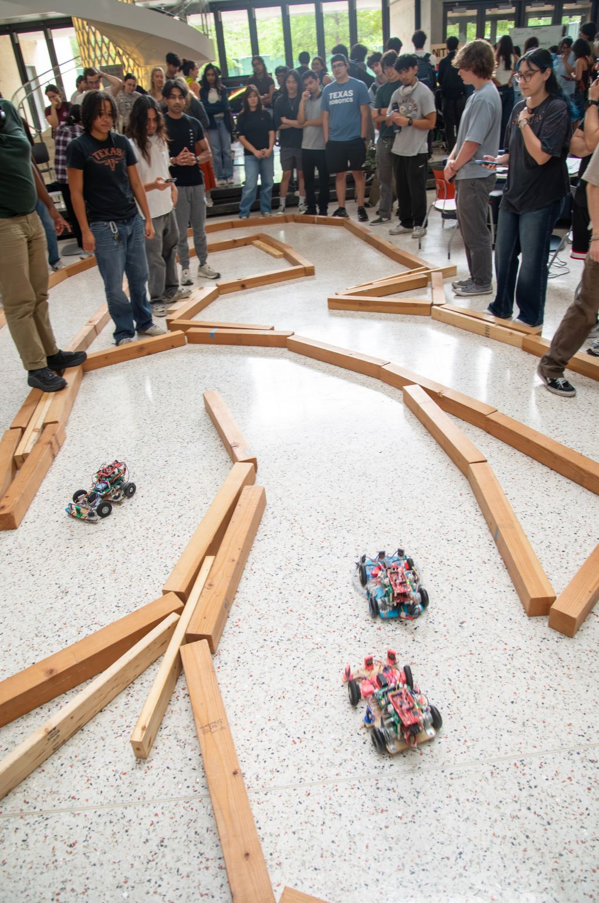
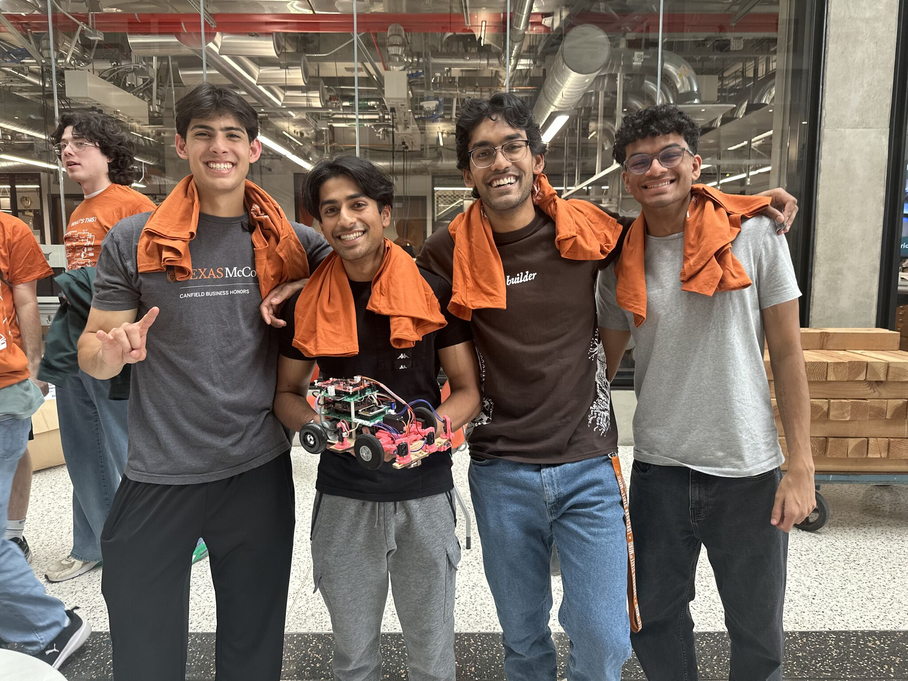
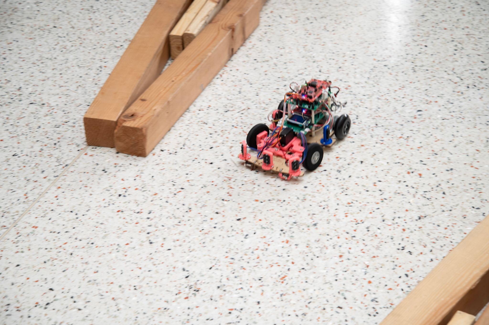

An autonomous racer on a custom RTOS platform — it wall-follows with a PD controller, classifies oncoming objects as walls or cars, and overtakes through a dedicated state machine, with a residual-RL model riding alongside. It won the ECE445M final race.

Race day · 1st place 🏆A small autonomous racer that follows walls with a PD controller (modulating its distance
setpoint), classifies oncoming objects as static walls or moving cars via an ego-motion-compensated
range-rate residual, and executes overtakes through an S_FOLLOW → S_DETECT → S_COMMIT →
S_PASS → S_REJOIN state machine. A residual-RL model runs alongside, gated to only apply
while wall-following.
ECE445M's lab final is a head-to-head autonomous race: stay on the track, detect and pass slower cars, and don't crash. On top of that, I built the underlying platform — a custom RTOS with a FAT filesystem, heap management, and dynamic process loading from disk — so the racing logic had a real operating system underneath it.
The PD wall-follower modulates dist_ref_cur to shift laterally — the same
low-level controller does both following and overtaking, just with a different setpoint. The
RL residual is strictly gated to S_FOLLOW so it never fights the passing logic.
An ego-motion-compensated residual r = front_filt − front_pred accumulates to
distinguish static walls (approaching at ego speed) from moving cars; tuning chases false
positives on apexes.
S_FOLLOW → S_DETECT → S_COMMIT → S_PASS → S_REJOIN, with timing guards
(T_PASS_MIN, T_CLEAR_MS) against premature rejoins.
A first-class RobotCalib() drives perfectly straight and computes top speed from
the LiDAR range derivative, printing the result to the ST7735 — turning a magic constant into a
measured value.


ot_state and dist_ref_cur during a pass
is coming. Reach out for details.